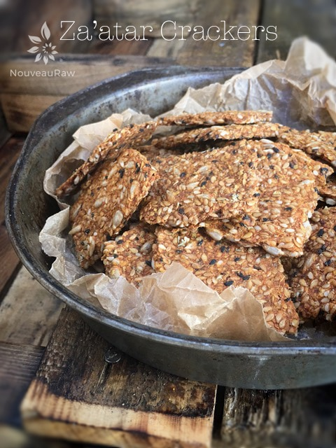
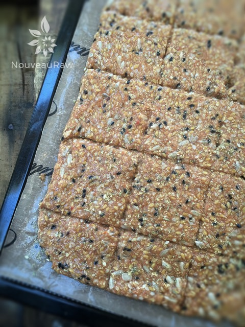
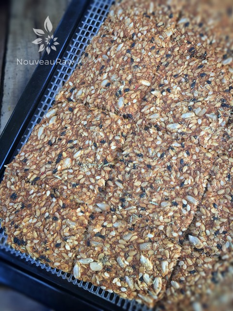
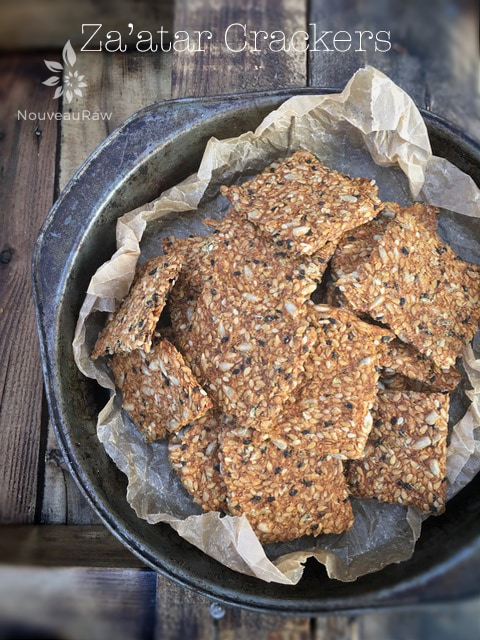

Za’atar Crackers

~ raw, vegan, gluten-free ~
Raw crackers are a staple in our household. Every once in a while I have the temptation to just buy a box of gluten-free crackers. I stand up tall and march myself right to the health food section of the store. With a look of determination on my face, I seek out the cracker section.
I stand there looking at them… them looking at me. I can hear their little cries, “Pick me, pick me!” I can feel myself start to buckle. I pick up a box and turn it over to read the ingredients… I start to mumble a spew of words that I can barely pronounce.
The further I get into the ingredient list the more the temptation starts to weaken. I put the cracker box back on the shelf and shake my head as though an alien being left my body. What? What am I doing? Where am I? Crackers? Pft… I can make those at home! I spin on my heels and head to the produce section.
Maybe this story sounds silly or maybe it sounds familiar… but in the end, there really isn’t anything better than making your own crackers. You can tailor them exactly to your liking and control the quality of ingredients that go into them.
At this point, I have either scared you away or I have inspired you. These are crispy, sturdy crackers that have a sunflower flavor coupled with the gentle spice of Za’atar. I hope I scared you into inspiration. Enjoy!
Ingredients:
Yields 2 trays or 22 crackers
- 6 Roma tomatoes, chopped
- 3/4 tsp garam masala
- 2 Tbsp za’atar spice mix, divided in half
- 1 Tbsp ground cumin
- 1/2 tsp Himalayan pink salt
- 1/2 cup ground flaxseeds
- 1/2 cup sesame seeds
- 1 cup sunflower seeds, soaked 4–5 hours
- 1 cup flax seeds
- 1/4 – 1/2 cup water
Yields 1/2 cup
- 3 Tbsp dried thyme
- 2 Tbsp dried lemon peel
- 1 Tbsp sesame seeds
- 1/2 tsp dried oregano
- 1/4 tsp Himalayan pink salt
Preparation:
Za’atar Spice:
- In a spice grinder, pulse the spices together a few times just enough to mix and break up some of the seeds — there should still be many whole seeds visible.
- Store in a cool, dark place for up to six months.
Cracker:
- Blend the Roma tomatoes, garam masala, 1 tablespoon za’atar spice mix, cumin, and salt in the blender; set aside.
- In a large mixing bowl, combine the flax meal, sesame seeds, sunflower seeds, and flax seeds.
- Add the tomato mixture to the bowl and mix together. Let it rest for the flax seeds to thicken up the batter.
- Add water if the batter is too thick. Sometimes tomatoes are juicier than other times and more liquid isn’t needed.
- Spread a thin layer over Teflex sheet with an offset spatula, about 1-1/4 cups per sheet.
- Score the crackers with a knife or pizza cutter to the desired size.
- Sprinkle each sheet with a little of the remaining 1 tablespoon za’atar spice mix.
- Dehydrate at 145 degrees (F) for 1 hour, then reduce to 115 degrees (F) for up to 24 hours, until crackers are fully dry.
- Remember dry times are suggestions. It will always vary depending on the climate, altitude, machine model and how full it is.
Culinary Explanations:
- Why do I start the dehydrator at 145 degrees (F)? Click (here) to learn the reason behind this.
- When working with fresh ingredients it is important to taste test as you build a recipe. Learn why (here).
- Don’t own a dehydrator? Learn how to use your oven (here). I do however truly believe that it is a worthwhile investment. Click (here) to learn what I use.

Batter spread, scored, and ready to be dehydrated.

It may be hard to see the score lines but this is what it looks like right out of the dehydrator. Once cooled, I snapped them into cracker pieces with the score lines that I had made.

© AmieSue.com